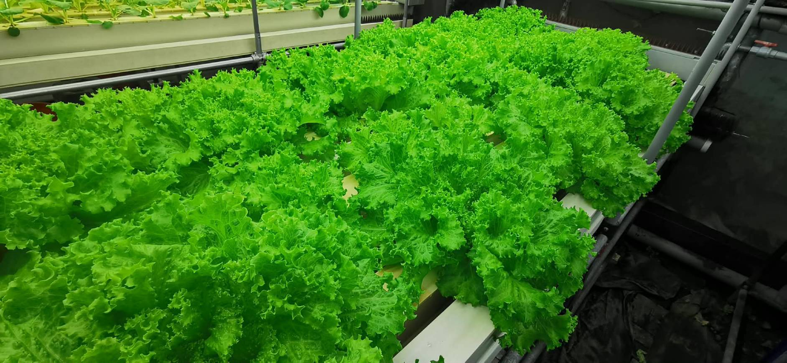
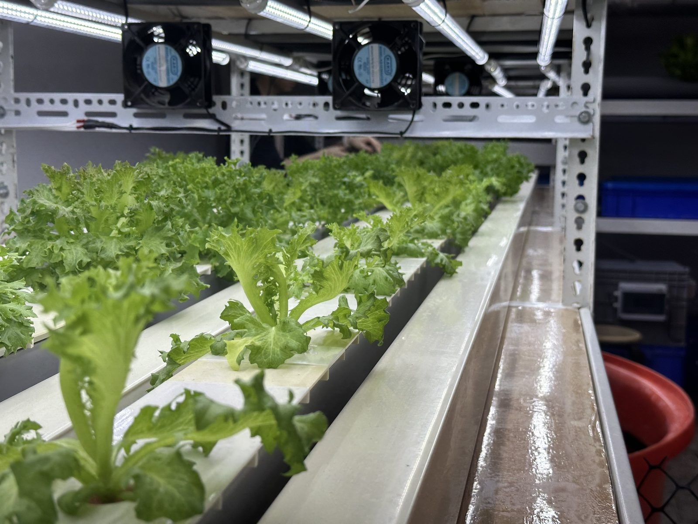
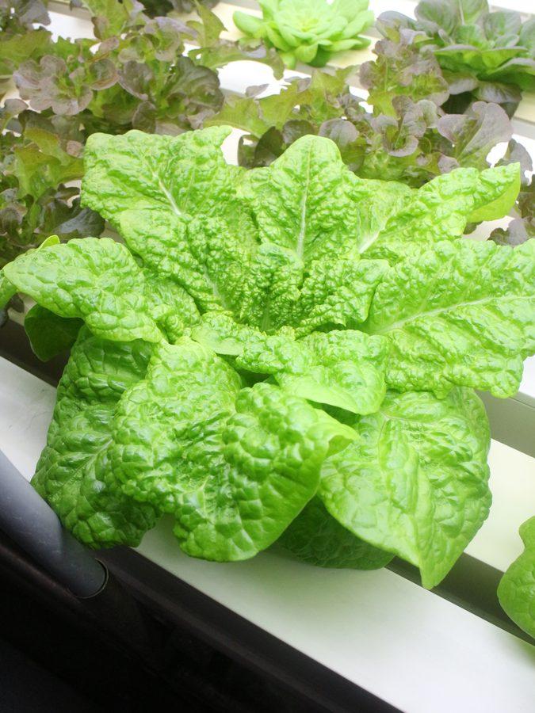
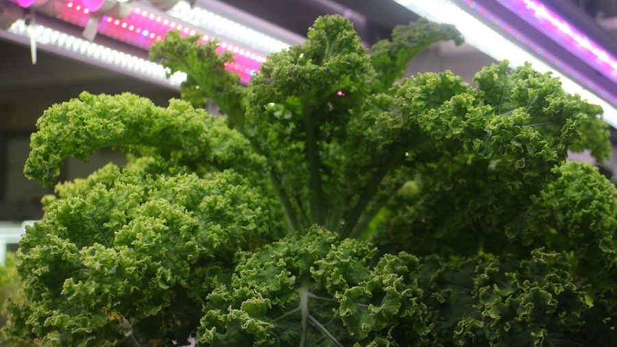

這週採收
11/17 至 11/23，週二、週五採收 紅橡木萵苣充足
紅橡木萵苣充足
甜蘿蔓充足 綠奶油萵苣充足
綠奶油萵苣充足 紅火焰萵苣剩少量
紅火焰萵苣剩少量 芝麻葉剩少量
芝麻葉剩少量
羽衣甘藍下週採收
兩種買法，一次結帳
自家萵苣按包賣，合作農場的商品單件買，全部放進同一個購物車。
農場裡的日常
北投這十二坪裡，從育苗到採收都在同一個空間。

建議補拍：採收的手、魚池裡的魚、打包出貨、創辦人在農場的照片，放進這一區




自家萵苣按包賣，合作農場的商品單件買，全部放進同一個購物車。
北投這十二坪裡，從育苗到採收都在同一個空間。
建議補拍：採收的手、魚池裡的魚、打包出貨、創辦人在農場的照片，放進這一區